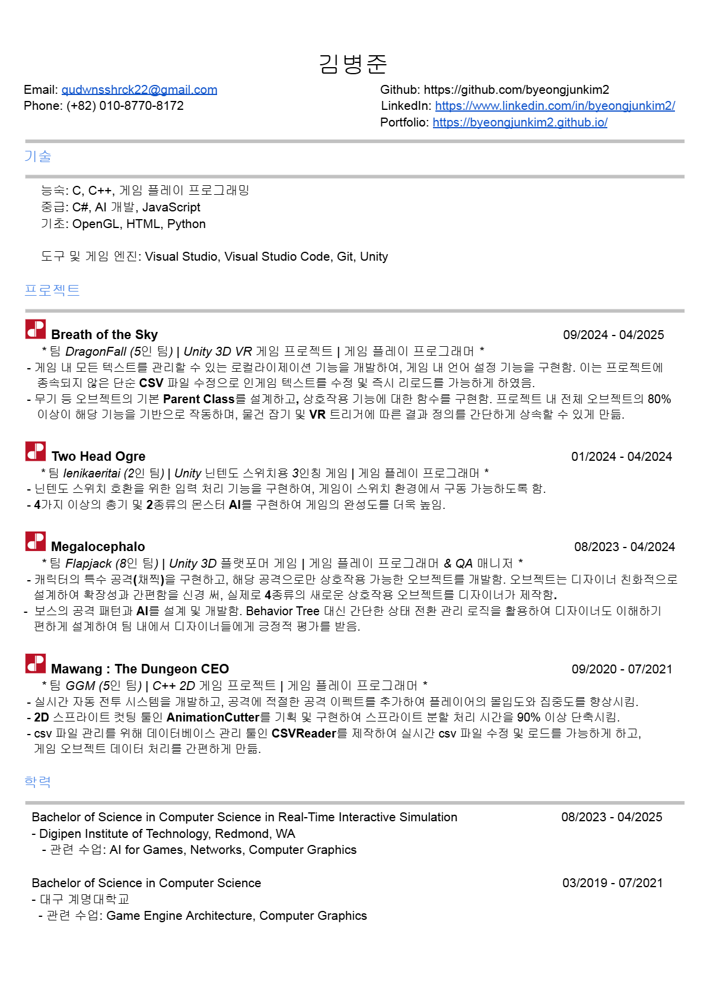
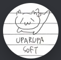

김병준의 포트폴리오
프로그래머
 [이력서 다운로드]Greetings! 안녕하세요! 제 포트폴리오 페이지에 방문해 주신 것을 환영합니다! 저를 보다 잘 알아가실 수 있는 기회가 됐으면 좋겠습니다!
[연락처]
휴대폰(KR): (+82) 10-8770-8172
휴대폰(US):
(+1) 425-521-9845 (not available)
디스코드: sinyonuni
LinkedIn: LinkedIn
깃허브: As student ID As user ID
[기술]
[프로그래밍 언어]
C
C++ JavaScript HTML (Basic) Python (Basic)[라이브러리]
OpenGL
[도구]
Visual Studio Visual Studio Code Git
[게임 엔진]
Unity
[프로젝트]
Breath of the Sky
팀 DragonFall | 09/2024 - 04/2025
다섯 명 팀의 3D VR 게임 프로젝트에서 게임플레이 프로그래머로 참여
[Dev Log 1] [Dev Log 2] [Dev Log 3] [Dev Log 4]
[GitHub Repository] 플레이어가 다양한 섬을 탐험하며 드래곤 라이딩과 그래플링을 즐길 수 있는 VR 디바이스용 3D 게임.
기본 오브젝트 및 무기 시스템: VR 손과의 상호작용, 오브젝트 잡기, 무기 기능을 제어하는 강력한 기반 스크립트를 구현.
이 시스템은 게임 내 오브젝트의 80% 이상이 상속받아 핵심 상호작용을 통일된 방식으로 처리함. 주요 기능은 다음과 같음:
* 잡기 메커닉: VR 환경에서 오브젝트를 매끄럽게 집고 조작 가능.
* 무기 베이스 스크립트: 다양한 무기 타입을 위한 발사, 재장전, 반동 등의 필수 기능 제공.
* 플로팅 UI: 플레이어의 손이 아이템 근처에 접근하면 해당 아이템의 설명을 띄워주는 플로팅 UI 시스템 구현.
* 아이템 교환: 플레이어가 손 사이에서 아이템을 교환할 수 있어 게임플레이의 유연성 강화.
홀스터: 무기를 등에 보관해 빠르게 꺼낼 수 있는 기능 구현 (단, 누구도 사용하지 않아 삭제됨)
로컬라이제이션: 게임 내 모든 텍스트를 관리하고, 게임 내에서 손쉽게 언어를 전환할 수 있는 로컬라이제이션 기능 개발.
 Rizz Simulator 2077 (Prototype)
팀 Uparupa Soft | 07/2024 - (중단 됨)
5인 팀의 Unity 2D 가상 시뮬레이션 게임 AI 활용 프로젝트에서 UI/게임플레이 프로그래머로 참여
UI 시스템: 캐릭터 선택 UI와 대화 UI 제작 담당.Two Head Ogre
팀 Ienikaeritai | 01/2024 - 04/2024
2인 팀의 Nintendo Switch 호환 가능 3인칭 게임 프로젝트에서 게임플레이 프로그래머로 참여
비디오가 안 되신다면, [Click me]
Nintendo Switch용 3D 3인칭 게임으로, 두 플레이어가 각각 카메라 및 이동 조작과 공격을 담당. Nintendo Switch 입력 처리: Switch 이식성을 위해 입력 시스템을 구현하여 Nintendo Switch 플랫폼에서 원활히 플레이 가능하게 함. 무기 획득 및 공격: 다양한 플레이 스타일을 지원하기 위해 3종류의 총기와 공격 기능 제작. 몬스터 AI: 플레이어를 인식하고, 추격하며 공격하는 몬스터를 구현해 게임의 핵심 메커닉 완성. 맵 디자인: 플레이어와 몬스터가 자유롭게 돌아다닐 수 있는 맵을 제작하여 탐험 요소 제공.
Megalocephalo
팀 Flapjack | 08/2023 - 04/2024
8인 팀의 3D 플랫포머 게임 프로젝트에서 게임플레이 프로그래머 & QA 담당
비디오가 안 되신다면, [Click me]
[GitHub Repository] [Game Download]3D 기반 맵에서 2.5D 형식으로 진행되는 플랫포머 게임으로, 플레이어는 다양한 장애물을 피하며 최종 보스를 물리치는 것을 목표로 함. 보스 몬스터 AI: 보스의 공격 패턴을 간단한 상태 전환 로직을 활용하여 제작하여 디자이너도 이해하기 쉽게 제작. 플레이어가 다양한 게임 요소를 활용해야만 공략할 수 있도록 설계하여 게임의 재미 요소 강화. 캐릭터 채찍 공격: 차지 공격인 채찍 시스템을 구현, 핵심 메커닉 중 하나로 게임 완성도에 크게 기여. 특수 플랫폼 및 오브젝트: 채찍 공격에만 반응하는 오브젝트를 활용해 게임에 다양한 요소 추가. 디자이너 친화적으로 제작하여 팀 디자이너들이 손쉽게 새로운 기믹을 제작할 수 있도록 지원. 퀄리티 보증(QA): 총 141개의 버그를 정리하고, 34개의 신규 버그를 발견. 주당 약 100개의 체크 리스트를 검토하며 게임 품질 향상에 기여.
3D Graphics Engine Demo
팀 NCJU | 03/2021 - 07/2021
2인 팀의 C++ 3D 엔진 데모 프로젝트에서 엔진 엔지니어로 참여
[Github Repository]C++ OpenGL 라이브러리를 활용해 다양한 고급 그래픽 기능을 개발하며 그래픽 프로그래밍 전문성을 입증. 절차적 3D 모델링: 프로그래밍적으로 복잡하고 동적인 3D 모델을 생성하여 다양한 콘텐츠를 효율적으로 제작 가능하게 함. 툰/포그 셰이딩: 툰 셰이딩, 안개 효과 등 스타일화된 렌더링 기법을 구현하여 비주얼 완성도와 미적 요소 강화. 지오메트리 셰이더: 지오메트리 셰이더를 활용해 기본 도형을 변형·조작, 오브젝트 렌더링의 가능성을 확장. 다양한 노이즈 생성 기법: Fractal, Turbulence, Marble, Wood, Value, Cloudlike, Metaball, Splatter, Perlin, Perlin3D 등 다양한 노이즈 생성 알고리즘을 구현. 이를 텍스처 생성 및 지형 합성에 활용해 사실적인 시각 효과를 제공.
Mawang The Dungeon CEO
팀 GGM | 09/2020 - 07/2021
5인 팀의 C++ 2D 게임 프로젝트에서 게임플레이 프로그래머로 참여
비디오가 안 되신다면, [Click me]
[Github Repository] [Game Download]자동 전투 시스템 및 동적 이펙트 개발: 팀 GGM 협업의 일환으로 C++ 2D 게임에서 자동 전투 시스템을 주도적으로 개발. 동적 비주얼 이펙트를 추가하여 플레이어의 몰입도와 집중도를 크게 향상. AnimationCutter 구현: 스프라이트 관리 효율화를 위해 AnimationCutter라는 전용 툴을 고안 및 구현. 스프라이트 컷팅 과정을 단순화하고 처리 시간을 90% 이상 단축하여 높은 작업 효율을 달성. CSVReader 제작 주도 – 데이터 관리 툴: 데이터 처리 효율성을 위해 Excel CSV 파일 전용 데이터베이스 관리 툴인 CSVReader를 구상하고 기반을 마련. 팀 내 데이터 활용을 간소화하여 접근성과 관리 편의성을 강화. 영상 트레일러 제작: 게임 홍보용 트레일러 영상을 직접 제작 및 렌더링. 피치 과정에서 긍정적인 반응을 얻으며 주목도 상승에 기여.
Not Bomb
팀 N.E.A.T | 04/2020 - 08/2020
4인 팀의 C++ 2D 게임 프로젝트에서 게임플레이 프로그래머로 참여
비디오가 안 되신다면, [Click me]
[Game Download]턴제 전투 시스템 개발: Team N.E.A.T의 핵심 멤버로 전략 카드 게임에 맞춘 정교한 턴제 전투 시스템을 구현. 플레이어와 동료들로부터 긍정적인 피드백을 받으며, 전략적 요소를 강화하고 전체적인 게임 재미를 크게 향상. 플레이어가 적의 공격에 전략적으로 대응할 수 있도록 설계해 게임의 깊이와 몰입도를 높임. 동적 보상 시스템 제작: 게임 내 전략성을 강조하기 위해 상황과 플레이어의 선택에 따라 달라지는 보상 시스템을 구현. 보상을 맥락에 맞게 제공함으로써 플레이어가 비판적이고 전략적으로 사고하도록 유도, 게임의 전략적 깊이와 리플레이성을 강화. 영상 트레일러 제작: 게임 홍보용 트레일러 영상을 직접 제작 및 렌더링. 피치 과정에서 주목을 끌며 긍정적인 반응을 이끌어냄.
Dungeon Maker (Prototype)
팀 DunMe | 11/2019 - 12/2019
3인 팀의 C++ 2D 게임 프로젝트에서 리드 프로그래머로 참여
개발자 친화적 맵 에디터 설계 및 구현: Team DunMe의 리드 프로그래머로서 직관적이고 사용하기 편리한 맵 에디터를 설계 및 구현. 팀원들이 정교한 게임 맵을 쉽고 빠르게 제작할 수 있도록 지원하여 개발 효율을 크게 향상. 이로 인해 프로젝트 개발 일정에도 긍정적인 영향을 미침. 게임 확장성 지원: 맵 에디터 구현의 가장 큰 성과 중 하나는 게임 확장성을 용이하게 만든 점. 새로운 콘텐츠와 기능을 손쉽게 추가할 수 있는 환경을 제공해 개발 주기를 더 원활하고 민첩하게 개선. 맵 에디터는 게임 성장과 발전을 위한 핵심 기반으로 작용.Tactical'S kill Fight (Prototype)
팀 Beginner | 10/2019 - 11/2019
3인 팀의 C++ 2D 게임 프로젝트에서 테크니컬 프로그래머로 참여
[Game Download] 동적 이동 레이저 장애물 구현: Team Beginner의 테크니컬 프로그래머로서 PVP 게임을 위해 동적으로 움직이는 레이저 장애물을 기획 및 구현. 기술적 역량과 문제 해결 능력을 발휘하여 게임에 핵심적인 인터랙션 요소를 추가.. 팀 이해도 향상: 레이저 장애물의 도입을 통해 팀 전체의 게임 메커닉 및 상호작용 요소에 대한 이해도를 크게 높임. 선형 방정식을 활용한 정밀한 수학적 모델링으로 레이저 동작을 시각화하여, 복잡한 개념을 직관적으로 전달. 이를 통해 개발 과정이 간소화되고, 팀의 게임 디자인 원칙 이해도 또한 향상됨.Mine Sweeper (Mastercopy)
- | 09/2019 - 10/2019
3인 팀의 JavaScript 2D 게임 프로젝트에서 리드 프로그래머로 참여
[Source Code] MineSweeper Mastercopy 설계 및 개발: 게임 개발자로서 MineSweeper Mastercopy의 설계와 제작을 주도. 기본적인 지뢰찾기 메커닉을 충실히 구현하는 동시에 다양한 커스텀 게임 변형을 지원하도록 설계하여 게임 디자인과 개발 역량을 입증. 기본적인 로직, 깃발 표시, 직관적인 Shift-Click 상호작용 등 핵심 요소를 완벽하게 구현. 커스텀 게임 변형 지원: 기본 메커닉 외에도 맵 크기와 지뢰 수를 자유롭게 조정할 수 있는 다양한 커스터마이즈 기능을 제공. 이를 통해 플레이어의 취향에 맞는 맞춤형 게임 경험을 가능하게 하고, 게임 변형의 폭을 넓혀 리플레이성을 강화.